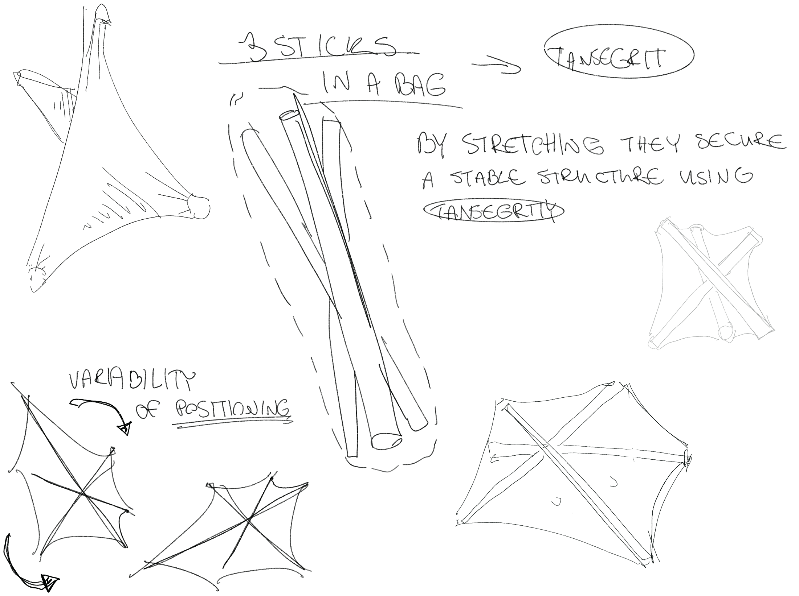
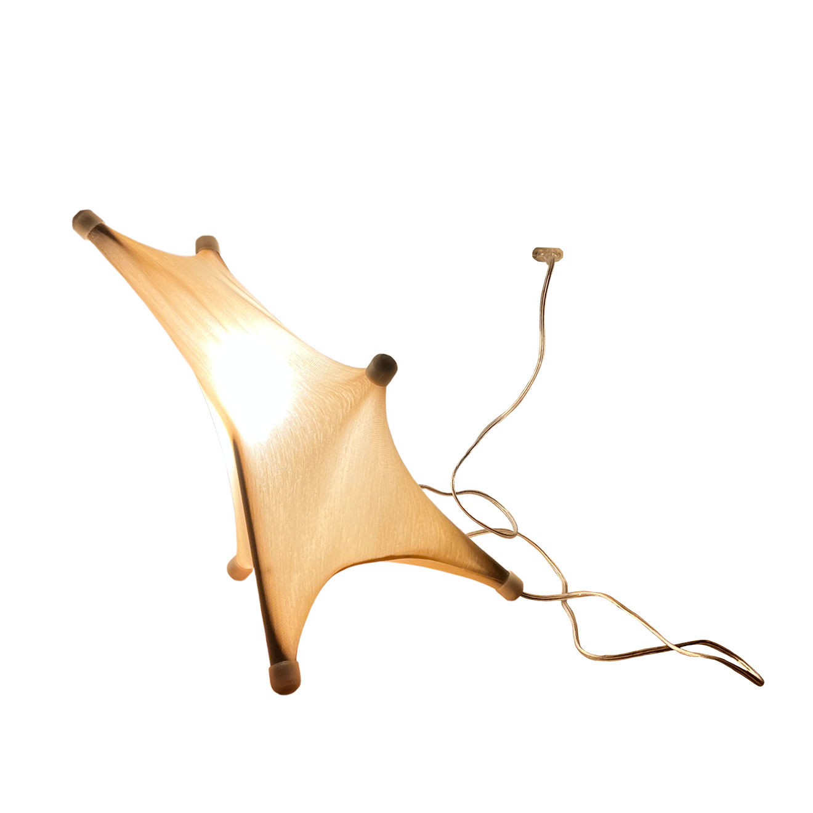
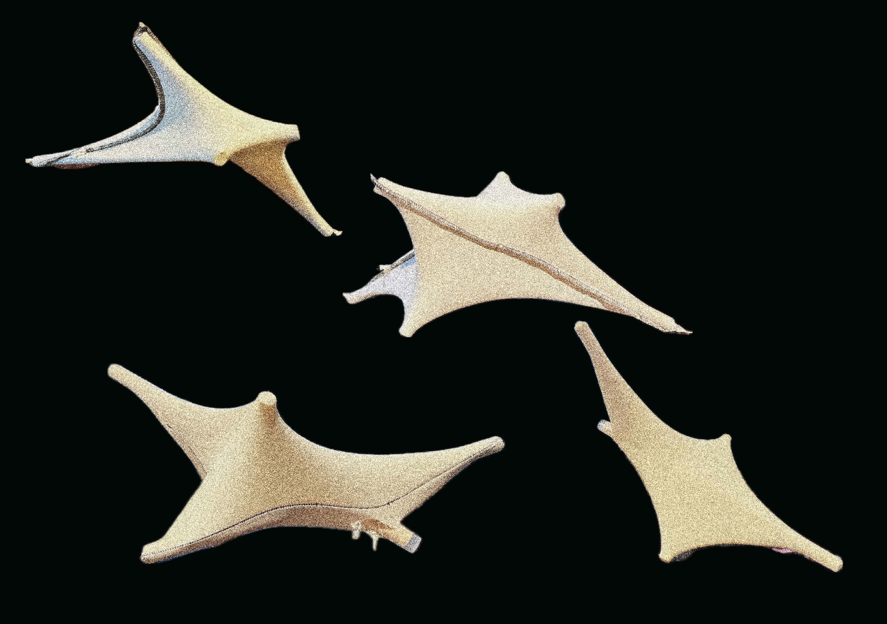
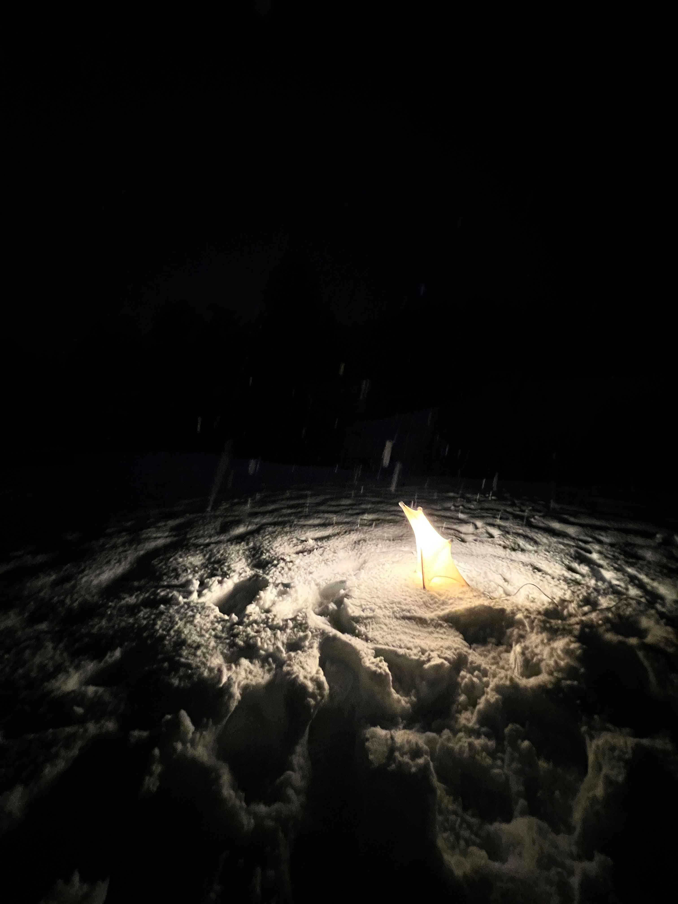
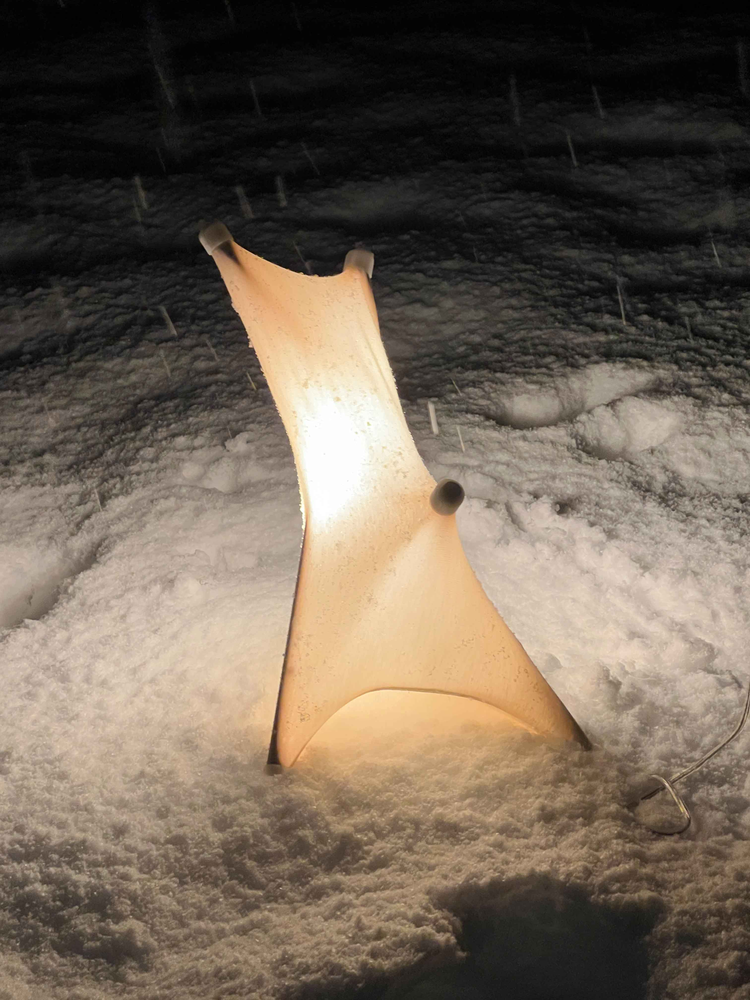
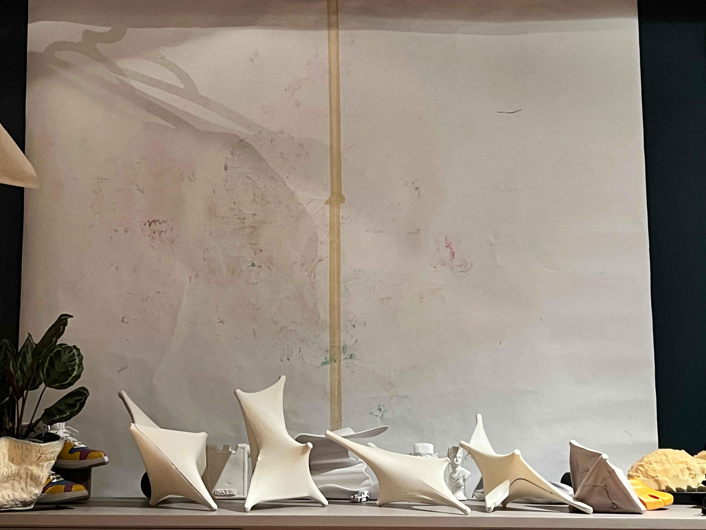
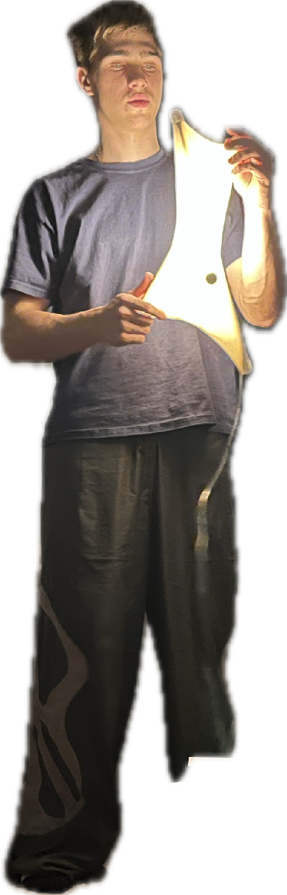

TENSEGRIT LAMP
IN PROGRESS...
This project has gone through many stages and is still growing as I learn more about TENSEGRITY structures.
Exploration of shapes - lamp that can fold down into a bag of sticks and unfold into a dynamic illuminated sculpture.
Thing that keeps these unpredictable shapes together is tensional integrity:
What holds these unpredictable shapes together is tensional integrity. This happens when certain parts push against each other while others pull, creating a balance that keeps everything in place. This delicate balance allows the structure to shift and transform, showcasing the beauty of tensional integrity in a unique way.






